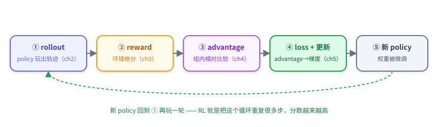
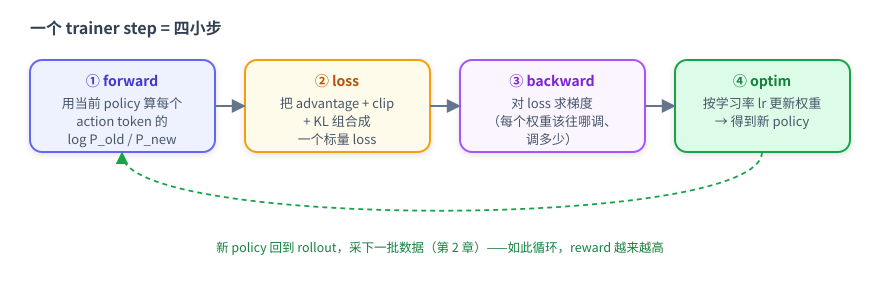
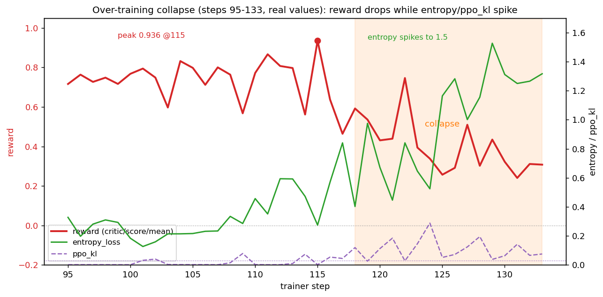

本章模式：拆解。第 4 章你算出了每条轨迹的 advantage（成功 +2.0、失败 -0.47）。这一章回答最后一个问题：这个数怎么真正改变模型？ 即 advantage → loss → 梯度 → 新权重。讲完你就闭环了：第 0 章那张交互循环图里「用分数调整 policy」的箭头，本章把它拆开。
5.0 先回到大图：更新发生在哪

本章只讲 ④。它的目标很朴素：让 advantage>0 的动作以后更可能出现，advantage<0 的动作更不可能出现。
5.1 policy gradient 的直觉：好动作概率↑，坏动作概率↓
模型每步输出动作时，其实是在给词表里每个 token 一个概率。训练要做的就是调这些概率。最直接的写法：
loss = − advantage × log P(这个动作 | 当前状态)
读这个式子：
log P(动作)越大 = 模型越倾向于输出这个动作；- 乘上
−advantage后做最小化： - advantage > 0（好动作）→ 最小化
−正数×logP→ 等价于增大 logP → 好动作概率↑； - advantage < 0（坏动作）→ 减小 logP → 坏动作概率↓。
这就是 policy gradient（策略梯度） 的全部直觉：用 advantage 当「方向和力度」，去推每个动作的概率。第 4 章那个 +2.0 / -0.47，就是这里的推力大小。
用 candle 例子落地：§2.3 那条成功轨迹的每个动作（take candle 2 from toilet 1、move candle 2 to countertop 1）advantage = +2.0 → 在当时那个 state 下做这些动作的概率被推高；§2.2 那条失败轨迹的动作（拿错 toiletpaper、look around 死循环）advantage = -0.47 → 对应 state 下的概率被压低。
⚠️ 关键：推高的是「在那个特定 state 下做这个动作」的条件概率（P(action | state)），不是盲目推高这个动作本身。比如
take candle 2 from toilet 1只在「站在 toilet 1 前、看到 candle 2」那个 state 下才被推高；换一个没有 candle 2 的 state，这个动作本来就不该做、也不会被推高。所以 RL 学的是「看到某个局面时该做什么」，而不是「任何时候都输出某个固定动作」——state 不同、目标不同，同一个动作的意义完全不同。注意只对模型自己输出的 action token 算 loss。observation 是环境给的、不是模型选的，不应该被「鼓励/抑制」。
5.2 为什么需要 PPO clip
§5.1 的朴素版有个致命问题：一步可能迈太大。如果某条轨迹 advantage 很大，朴素梯度会把那几个 token 的概率一次推得极高，模型瞬间「变脸」、下一轮 rollout 分布剧变、训练发散。
先补一个前情：rollout policy 和 train policy 不是同一个。采样数据（rollout）是用当时那一刻的模型跑的（叫 rollout policy / 旧 policy）；训练是在更新出一个新模型（train policy / 新 policy）。我们拿来训练的数据是旧 policy 玩出来的，更新的却是新 policy——两者不是同一个模型。这就是 off-policy：数据和当前模型有点对不上，差得越多越不可靠。实际训练里采样很慢、不可能每更新一次就重采，所以 Trinity 把采样和训练分开来提速（第 1 章：4+4 分卡并行），代价就是数据稍微 off-policy。
ratio：P_new(动作) / P_old(动作)，衡量「新旧 policy 在这个动作上差了多少」（=1 表示一致）。
为什么需要 clip：如果放任 ratio 无限变化，一次更新可能把某个动作的概率推高好几倍，新 policy 瞬间和旧 policy 差很远，那批 off-policy 数据立刻「过期」、训练就崩。所以 PPO 把 ratio 截断（clip）在一个小范围：
ratio = exp(log_prob_new - log_prob_old) # = P_new / P_old
clipped = clip(ratio, 1 - 0.2, 1 + 0.2) # 把 ratio 限制在 [0.8, 1.2]
loss = -min(ratio * advantage, clipped * advantage)
- advantage 决定方向：+2.016 的 token 概率被推高，-0.465 的被压低；
- clip 决定步长：用「数据的新旧程度」（ratio 偏差）来定更新权重——数据越旧（新旧 policy 差越大），更新权重越小；一旦 ratio 超出 [0.8, 1.2]，这个 token 的更新就被直接截断。
pg_clipfrac = 「被 clip 截断的 token 占比」。本实验稳态 < 1%（更新温和）；崩溃期升到 6.8%（step 118）。
详细：为什么要分开采样/训练、on/off policy（可选阅读）
- 为什么不每次更新都重新采样（严格 on-policy）：采一批数据要约 2 分钟（模型在环境里玩 256 局），而更新一次权重约 5 分钟。如果坚持「更新一次就重新采一次」，采样就成了瓶颈、GPU 大量空闲。所以 Trinity 让 explorer 持续采样塞进 buffer、trainer 从 buffer 取数据更新，两者并行（第 1 章的 4+4 分卡）——这是吞吐高的原因。
- 代价：数据稍微 off-policy。trainer 取到的数据是 explorer 几步前的 policy 玩的，和当前正在训练的 policy 不完全一致。更新越多、新旧差越大，数据越不可靠——这正是 clip 要解决的：限制单次更新的新旧差距，让数据保持「够新」。
- on-policy vs off-policy：on-policy = 数据由当前 policy 产生（完全一致，但慢）；off-policy = 数据由旧 policy 产生（快，但有偏差）。Trinity 选「稍微 off-policy + clip」，在速度和安全之间平衡。
5.3 两条「安全带」：KL 与 entropy
除了 clip，RL 训练通常还有两个约束/观察量，帮你判断 policy 是否健康：
KL（别偏离初心太远）：loss 里可加一项 kl_coef × KL(当前 policy ‖ 初始 policy)，把模型往「出发时的自己」轻轻拉一点，防止训着训着把 base 能力忘掉或漂到奇怪的地方。
两类 KL 别混淆：
| 名字 | 公式 | 哪里用 | 本实验值 |
|---|---|---|---|
actor/ppo_kl |
KL(π_old ‖ π_new)，新旧 policy | PPO clip 健康度（§5.2） | 0.001-0.005（崩溃期 0.12） |
actor/kl_loss |
KL(π_θ ‖ π_ref)，当前 vs base | loss 里的正则项 | 0 → 3.35 |
本实验 kl_coef=0.001，很轻——kl_loss 涨到 3.35，但乘 0.001 后对总 loss 只贡献 0.00335，几乎可忽略。这正是崩溃的伏笔：KL 约束太弱，拦不住 policy 漂走（§5.5）。
entropy（策略有多「随机」）：衡量 policy 输出分布的平坦程度。
- entropy 低 = 模型很果断（概率集中在少数动作）；
- entropy 高 = 模型很犹豫/随机（概率摊得很平）。
健康的 RL 训练，entropy 通常先降后稳（学会果断）。如果 entropy 一路单调上升，说明 policy 在退化、变随机——这是比 reward 更早的崩溃预警（§5.5）。
5.4 一步训练在做什么（概念级）
把 §5.1–5.3 合起来，一个 trainer step 就是四小步：

两个概念：
- 学习率 lr：梯度算出「方向」后，lr 决定「这一步实际走多大」。lr 太大 → 走太猛易崩；太小 → 学得慢。本实验 5e-6。
- grad_norm：梯度的整体大小。突然飙升往往意味着某批数据产生了异常大的更新（配合 reward 下跌看，是发散信号）。
工程上这 7680 个 experience 会切成很多小批（micro-batch）累积梯度、最后一次性 optim，以省显存；多卡时权重/梯度会分片并行。这些是「跑更大实验」才需要的工程知识，本教程不展开——显存真不够时，框架提供 offload 之类的手段，知道有这回事即可。
5.5 🔥 最重要的一节：过度训练，reward 涨上去又崩下来
前面都是「怎么更新」。这一节讲更新过头会怎样——这是本教程真实训练里最 valuable 的一课，也是 RL 和「越训越好」的监督学习最大的直觉差异。
真实曲线（本实验 133 step）：reward 从 -0.09 一路涨到 +0.94（step 115 峰值），然后 step ~118 起崩，跌到 0.24~0.44，13 步不恢复，最终手动停止、采用 step-100 的 checkpoint。

崩溃时各指标同步恶化（trainer.log 真实值）：
| step | reward | entropy | ppo_kl | clipfrac | 状态 |
|---|---|---|---|---|---|
| 100 | +0.768 | 0.18 | 0.001 | 0.003 | 健康 |
| 115 | +0.936 | 0.27 | 0.001 | 0.004 | 峰值 |
| 118 | +0.592 | 0.40 | 0.119 | 0.068 | ⚠️ kl 爆 |
| 125 | +0.257 | 1.16 | 0.051 | 0.029 | 💥 entropy 爆炸 |
| 129 | +0.435 | 1.53 | 0.038 | 0.029 | 策略已退化 |
| 133 | +0.308 | 1.32 | 0.075 | 0.025 | 停止 |
崩溃链条（把本章概念串起来）：
模型变强（训练 reward 升高）→ 组内大多「全对」，advantage 信号变弱变噪
↓
KL 约束太轻（0.001）+ lr 不衰减 → 在噪声上继续做较大更新
↓
entropy 单调上升（0.27 → 1.5）= policy 变随机、输出变冗长混乱
↓
ppo_kl / clipfrac 飙升 = 单步更新过大、被保险丝频繁拦下
↓
动作质量下降 → reward 崩（0.94 → 0.3）
三个可操作的教训：
- RL 有最佳停止点，不是越久越好。本实验的「最终模型」是 step-100 的 checkpoint，不是跑满的 step-133。
- entropy 和 ppo_kl 是比 reward 更早的预警。reward 还在 0.9 时，entropy 已从 0.03 涨到 0.27 在示警；等 reward 跌了再停就晚了。
- 约束与步长要配套：KL 太轻 / lr 太大 / 不衰减，都会让后期更新失控。第 6 章后半部分将围绕这两个旋钮设计开放实验，供你探索它们的影响。
💡 这一节就是第 0 章那句「RL 的边界」的具体样子：训练 reward 能从 −0.09 升到 +0.94，但也会在后期从 +0.94 跌回 +0.31。学会看 entropy / ppo_kl 刹车，和学会让 reward 上涨同样重要。
5.6 动手试试
# 重画 reward + entropy + ppo_kl 三联曲线，亲眼看「崩溃三件套」同步恶化
python scripts/rl_tutorial/plot_reward_curve.py \
--log <你的 checkpoint>/log/trainer.log --out /tmp/curve.png
# 看某一步的完整指标（loss / kl / entropy / grad_norm）
grep "Step 115:" <你的 checkpoint>/log/trainer.log
5.7 这一章你应该带走的
- ✅ policy gradient 直觉：loss = −advantage × log P(动作)，好动作概率↑、坏动作↓；只对模型自己的 action token 算。
- ✅ PPO clip：限制单步更新幅度（ratio 限 [0.8,1.2]），是防大跳的保险丝；看
pg_clipfrac。 - ✅ KL 与 entropy：KL 把 policy 往 base 轻拉；entropy 衡量随机程度，单调上升 = 退化预警。
- ✅ 一步训练四小步：forward → loss → backward → optim；lr 定步长、grad_norm 看异常。
- ✅ 过度训练会崩：reward 0.94 → 0.3 的真实案例；早停 + 看 entropy/ppo_kl 是解药；最终模型取 step-100 checkpoint。
❌ 你不需要懂：分布式分片、显存优化、框架内部实现——那些不影响你理解 RL 主线。
💡 留给自己的问题：你现在通过全参数实验走通了 rollout → reward → advantage → loss → 更新。那如果只训练少量新增参数，还能学到任务能力吗？第 6 章推荐你动手运行 LoRA32 训练，并提供曲线和评测结果作为参考；之后可以通过开放实验探索早停、G、学习率等因素的影响。